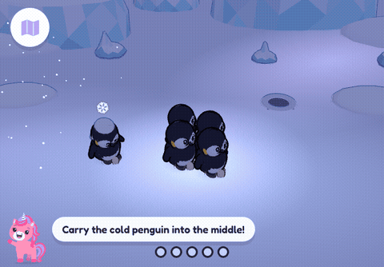
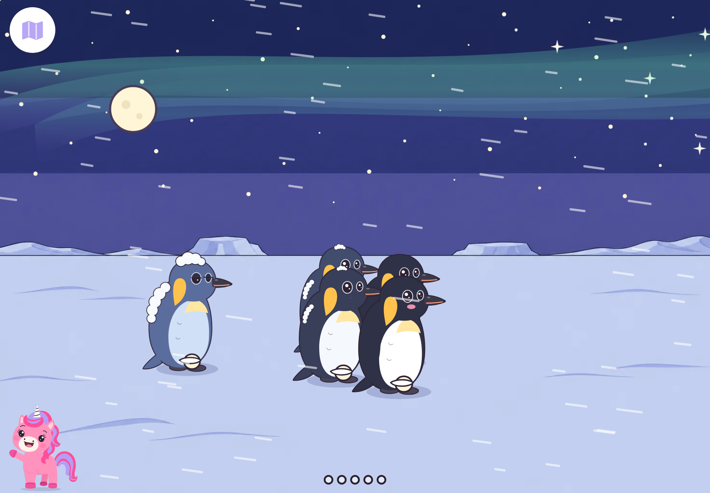
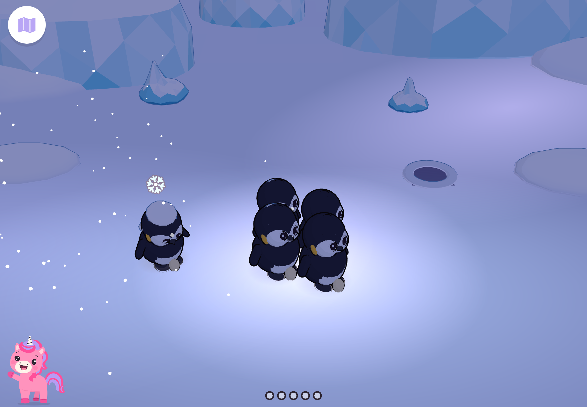
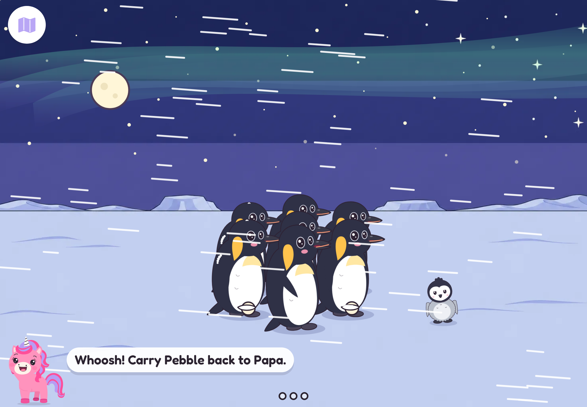
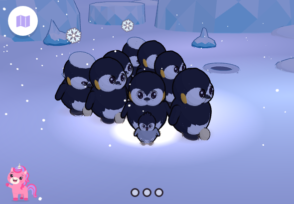
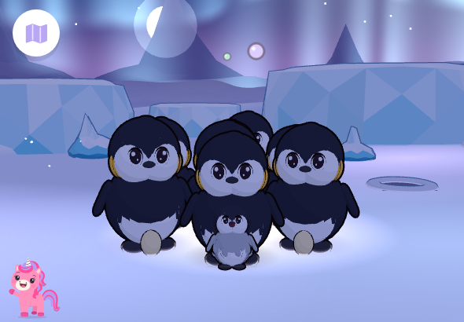
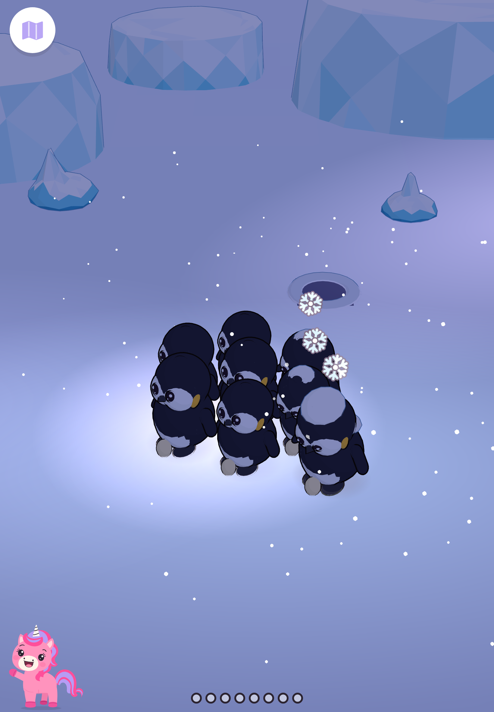

Emperor Huddle in 3D
The penguin dads from the films, in 3D: she carries the shivering ones into the warm middle, sees Pebble hatch at Papa's feet, carries him back when the wind rolls him away, and hears Papa sing Pebble the song he'll find him by at the end.
Before and after

After
Before
After
Before
After
After
AfterHear the script
Poles › Huddle
Your call
The game now ends with Papa singing Pebble his song (the tune the finale's chick hums), not a sunrise, because the film right after already shows the sunrise. Keep the song?
While she carries dads the camera looks down on the ice, so the night sky only shows in the hatch and song close-ups. Is that fine, or should the camera sit lower to show more sky (the dads overlap more)?